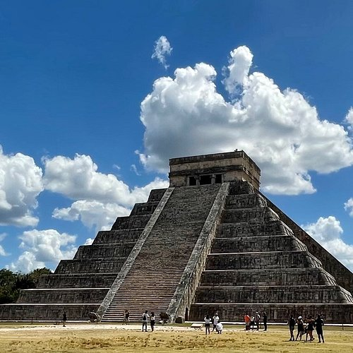
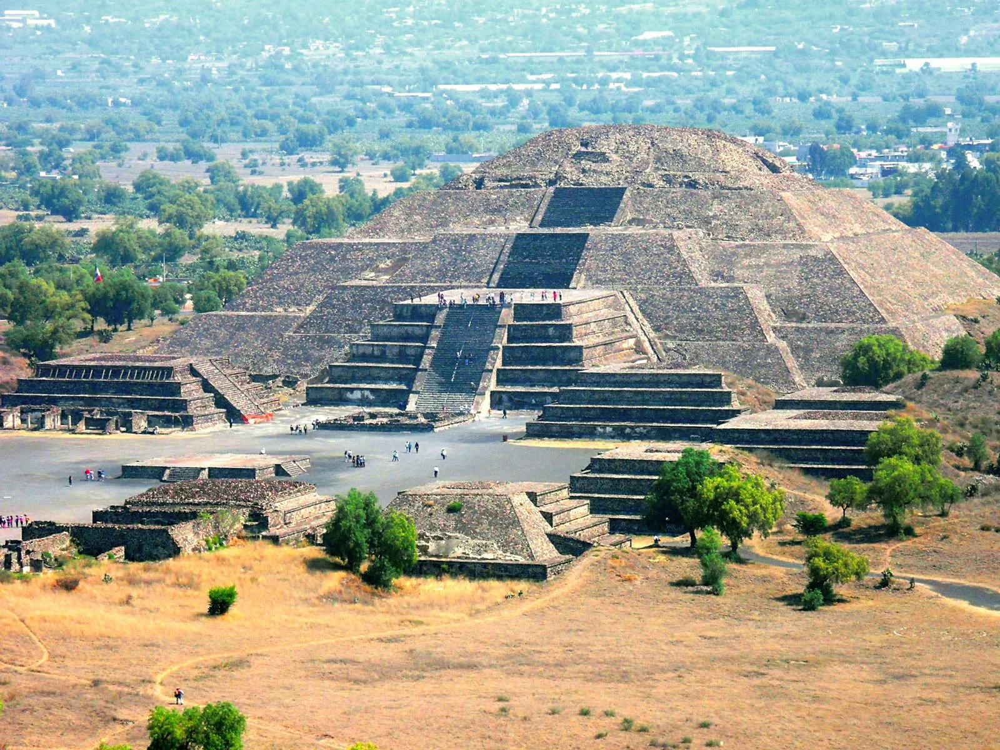

Capital: Mexico City
Population: ~129 million (2025 est.)
Language: Spanish
Traditions: Mariachi music, folk dances, and colorful crafts.
Foods: Tacos, enchiladas, tamales, mole, and guacamole.
Festivals: Día de los Muertos (Day of the Dead), Independence Day, and Cinco de Mayo.
Activities: Soccer, lucha libre (wrestling), and traditional fiestas with music and dancing.

